Basic UX
Tema 3, grundlæggende UX - uge 39, 40 & 41
Intro
I Tema 3 var formålet at give mig erfaring med udvalgte UX-modeller samt at lære mig, hvordan præsenterer mit produkt og formidler mine research og testresultater for interessenter.
Vi fik stillet den opgave at designe en webshop der sælger t-shirts. Jeg skulle designe en prototype af min webshop i adobe xd. Opgave var delt op i en række underopgaver som blev faciliteret løbende.
Indledende research til min prototype
Da vi havde omkring Koncept, research og idé lærte jeg om forskellige research metoder i form af Desk research, Observation, Interview og Survey.
Da jeg begyndte på desk research bestod det af at finde data og information, der allerede var udgivet på nettet. Det gjorde at jeg kunne sammenfatte, sammenstille og/eller synteserer det data og research jeg ville finde. At lave desk research er nemt og hurtigt, og jeg kunne en finde masse relevant materiale, men det var også udfordrende at indsnævre til sit eget emne, og jeg synes man skal forblive kritisk idet man ellers hurtigt kunne blive opslugt af de forskellige kilder.
Desk research kan give detajler om kunder, viden om forskellige målgrupper, indsigter om specifikke emner og man kan finde de seneste trends i industrien.
Desk Research
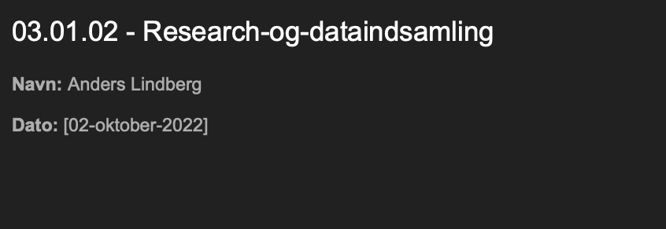 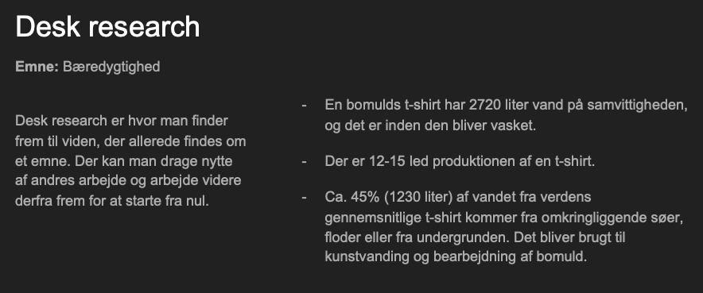 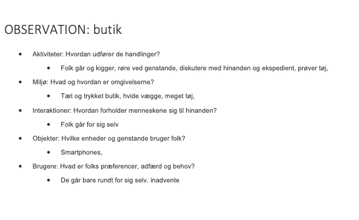 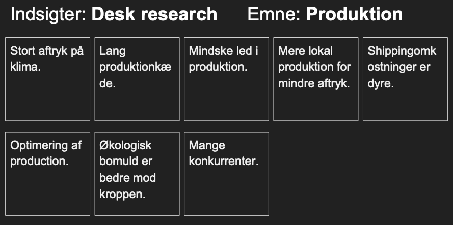 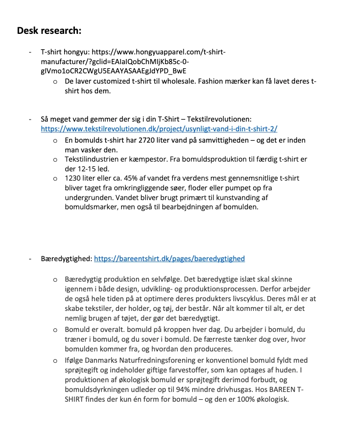 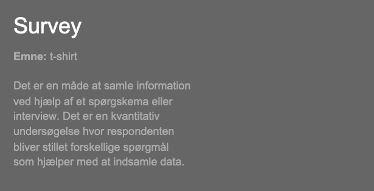 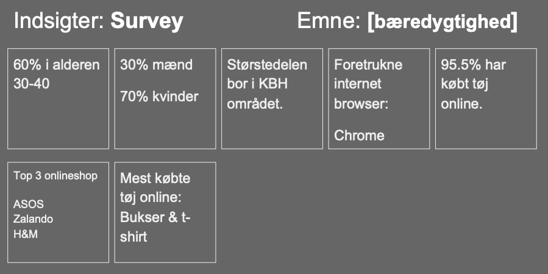Prototype
UI-og design konventioner samt produktudvikling i Adobe XD
Webshop : T-Shirt
Process
Starten på mit design, hvor jeg begynder at prøve konventioner af, i form placeringer og visuelle udtryk. Jeg prøver mig også med copy og microcopy
Layoutdiagrammer
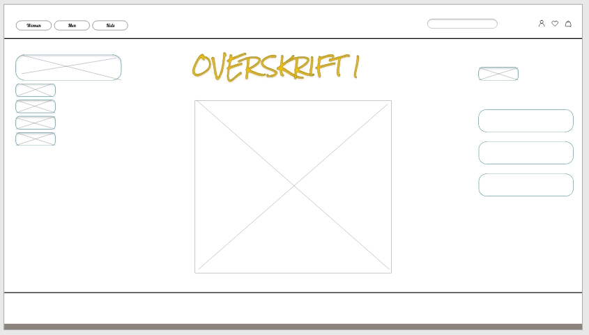Jeg tilføjer mere design og ligger footer og søgefelt til
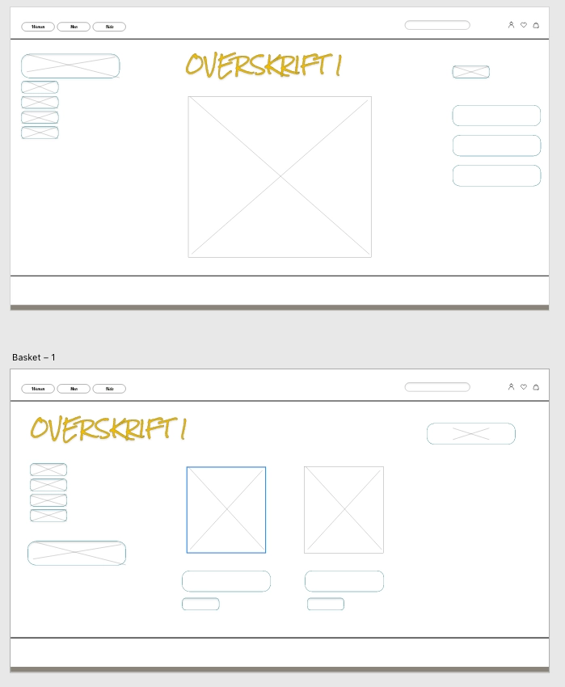Mobile layoutdiagram
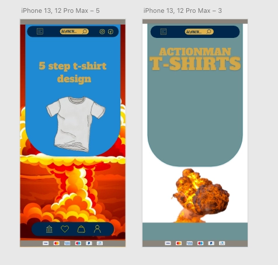 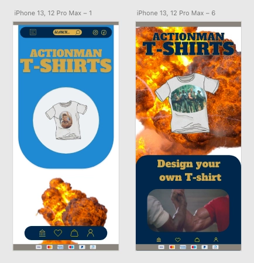Jeg tilføjer mere design og ligger footer og søgefelt til
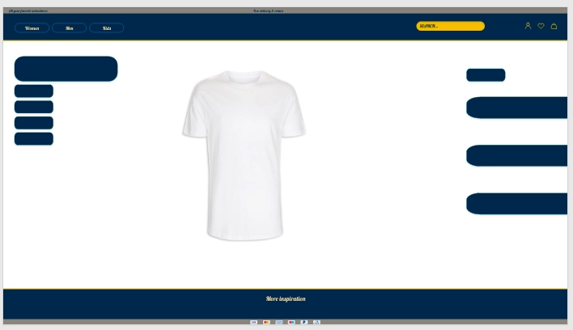Jeg prøver mig frem med færre ressourcer for brugeren at navigere i.
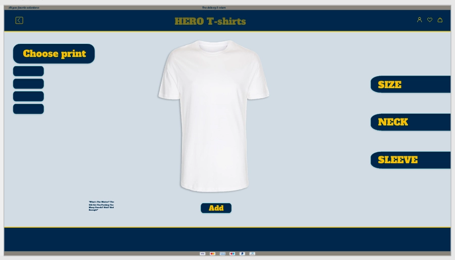Jeg prøver at lave et hieraki i min tekst
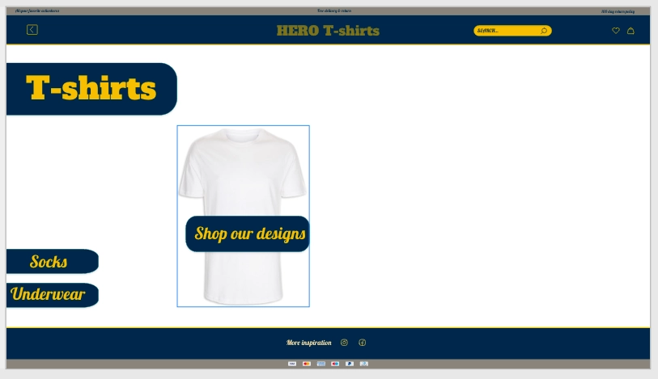Refleksion
I de 3 uger vi havde Basic UX mærkede jeg at min koncentration og fokus røg op og ned. Jeg startede med, ikke rigtig at kunne finde en mening med det hele, men da vi kom til modulet prototype, fandt jeg mere mening med det. Jeg synes det var spændende at designe og nørde ned i farver, fonts og konventioner, for til at bruge den viden i mit videre design. Selvom jeg gjorde det, forsvandt jeg lidt ud af at holde mig til facts hvorpå jeg løb løbsk iform af mit endelige design.
Når jeg ser tilbage, har jeg et godt øje til hele processen med UX. Jeg vil dog mene at der hvor jeg er mest tændt, er at designe i XD og redigere i Adobe photoshop.